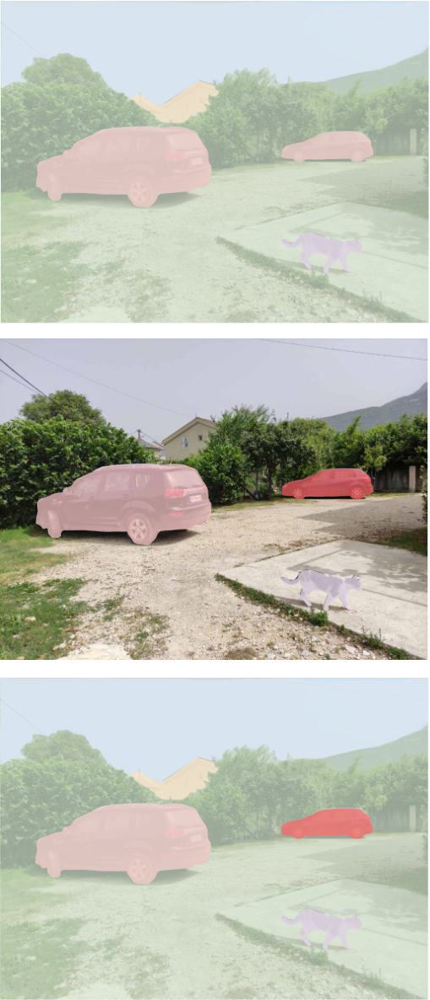
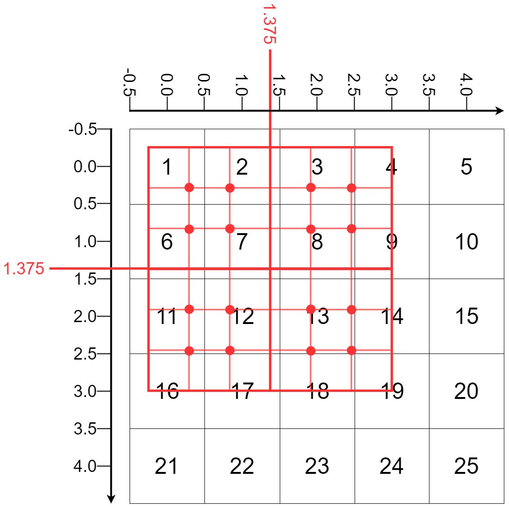
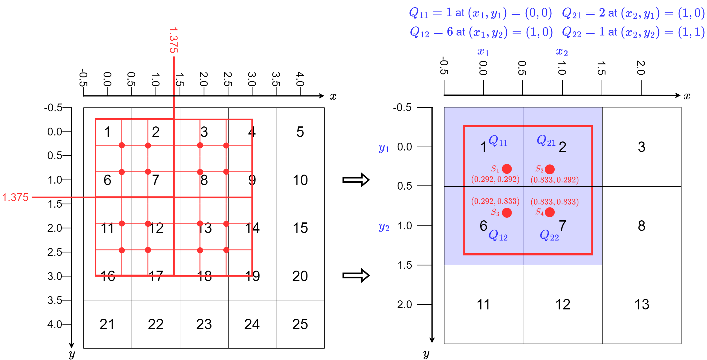
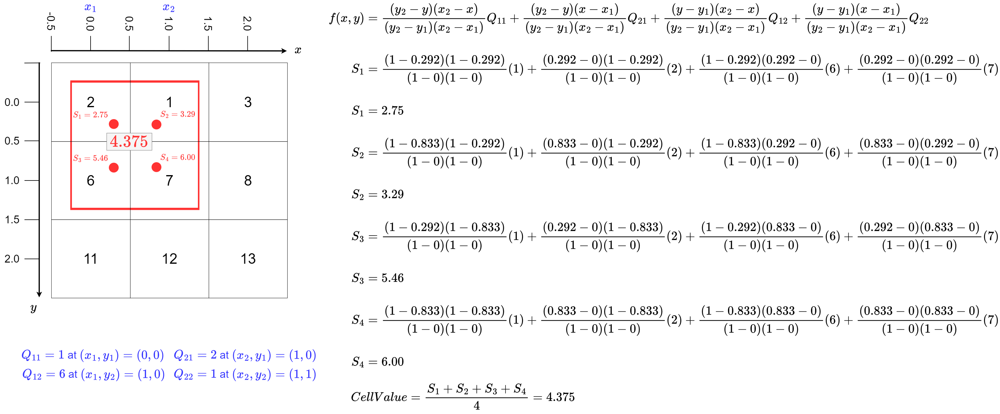
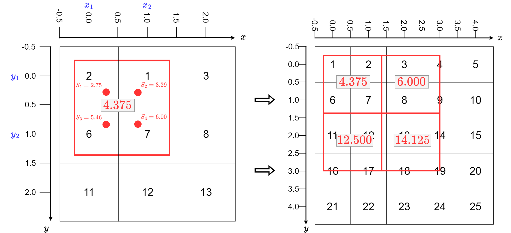
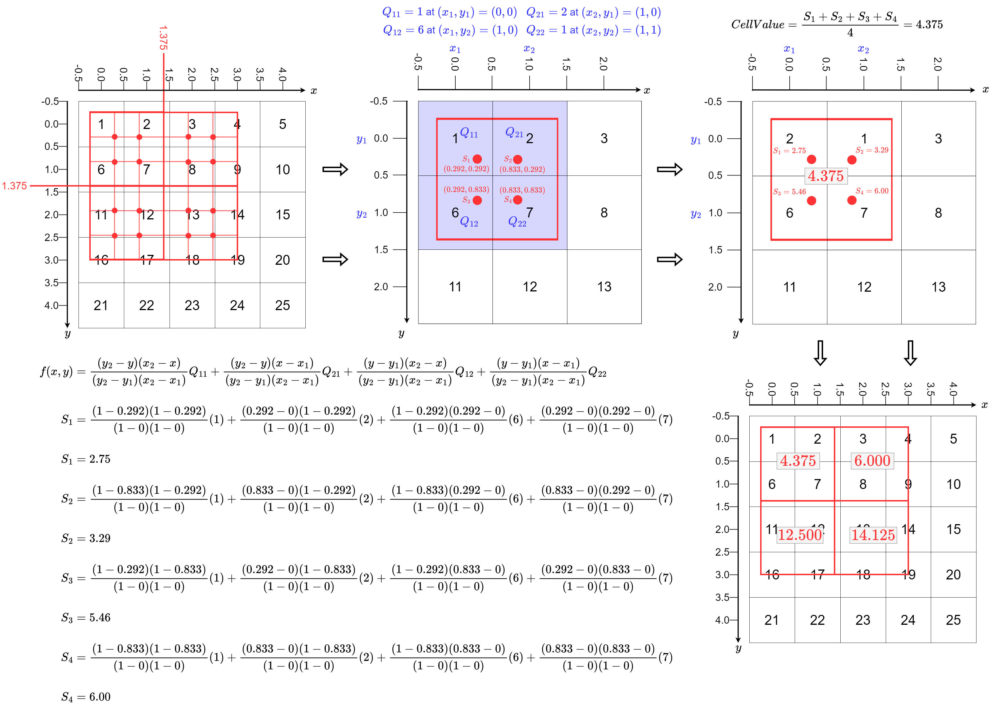

The following is a recording on this topic, I hope you find it useful!
Feel free to watch at 1.5x or 2x speed.
Note: If you find something missing or incorrect in the recording, then please let me know!
Video: Image Segmentation - Mask R-CNN
The following is a recording on this topic, I hope you find it useful!
Feel free to watch at 1.5x or 2x speed.
Note: If you find something missing or incorrect in the recording, then please let me know!
Image Segmentation Overview
Image segmentation is the process of partitioning an image into multiple segments (sets of pixels).
Segmentation is different from classification:
Classification: classify the whole image into one category
Segmentation: segment the image into multiple regions
Segmentation is different from object detection:
Object detection: detect the presence of objects in an image and locate their bounding boxes
Segmentation: segment the image into multiple regions, including the boundaries of the objects
Segmentation Types
Semantic Segmentation
Each pixel is assigned a single category or label.
Does not distinguish between instances of the same class.
Instance Segmentation
Assigns a unique identifier to each instance of an object.
Background regions are not explicitly segmented.
Panoptic Segmentation
Combines semantic and instance segmentation.
Provides a class label for each pixel while also distinguishing between instances.

Transposed Convolutions
Transposed convolutions (also known as deconvolutions or fractionally-strided convolutions) are essential operations in image segmentation architectures like U-Net:
Purpose: Upsampling feature maps to increase spatial dimensions
Operation: Reverses the spatial transformation of a normal convolution
Key characteristics:
Learns parameters for upsampling (unlike simple interpolation)
Increases spatial dimensions while potentially reducing channels
Used in decoder sections of segmentation networks
Transposed Convolution Example
In this example, we have a 2 \times 2 kernel applied to a 3 \times 3 input tensor.
A stride of 2 results in an output tensor with dimensions 6 \times 6.
Find location of sampling points by splitting each grid cell into equidistant points.

Nearest Neighbors
Determine the sampling coordinates and 4 nearest pixels for each sampling point.

Perform Bilinear Interpolation
Perform bilinear interpolation to get the value of each sampling point, take mean to get final value.

Final Output
Combine the values of each grid cell to get the final output.

ROI Align Full Workflow

PyTorch Example
Code
import numpy as npimport torchfrom torchvision.ops import roi_alignnp_features = np.array( [ [1,2,3,4,5], [6,7,8,9,10], [11,12,13,14,15], [16,17,18,19,20], [21,22,23,24,25] ])output_size = (2, 2)sampling_ratio =2# Define a tensor to perform ROI align ontorch_features = torch.tensor(np_features.reshape(1, 1, 5, 5), dtype=torch.float32)# Define an RoI (batch_idx, x1, y1, x2, y2)np_roi = np.array([-0.25, -0.25, 3, 3])torch_roi = torch.tensor([[0, np_roi[0], np_roi[1], np_roi[2], np_roi[3]]], dtype=torch.float32)# Perform ROI Alignoutput = roi_align(input=torch_features, boxes=torch_roi, output_size=output_size, spatial_scale=1.0, sampling_ratio=sampling_ratio,)print('The output of the ROI Align is:')print(output)
The output of the ROI Align is:
tensor([[[[ 4.3750, 6.0000],
[12.5000, 14.1250]]]])
Numpy Implementation
Code
# Define function to split a ROI into a grid of cellsdef split_roi(roi, output_size=(2, 2)):""" Split a ROI into a grid of cells for roi: list of [x1, y1, x2, y2] output_size: tuple of (height, width) returns (tuple of numpy.ndarray) : coordinates of the grid cells (x1, y1, x2, y2) """# Get the height and width of the ROI x, y = np.meshgrid(np.linspace(roi[0], roi[2], output_size[1]+1), np.linspace(roi[1], roi[3], output_size[0]+1))return x, yx, y = split_roi(np_roi, output_size=(2,2))print('The coordinates of the grid cells are:')print('x:\n', x)print('y:\n', y)
# Define x1, x2, y1, y2 for each cell in the gridx1 = x[:-1, :-1]x2 = x[1:, 1:]y1 = y[:-1, :-1]y2 = y[1:, 1:]print('The x1, x2, y1, y2 for each cell in the grid are:')print('x1:\n', x1)print('x2:\n', x2)print('y1:\n', y1)print('y2:\n', y2)
The x1, x2, y1, y2 for each cell in the grid are:
x1:
[[-0.25 1.375]
[-0.25 1.375]]
x2:
[[1.375 3. ]
[1.375 3. ]]
y1:
[[-0.25 -0.25 ]
[ 1.375 1.375]]
y2:
[[1.375 1.375]
[3. 3. ]]
Code
# Define a function to return sampling points given a grid cell coordinatesdef get_sampling_points(x1, x2, y1, y2, sampling_ratio=2):""" Get sampling points from a grid cell x1 (float) : x-coordinate of the top-side of the grid cell x2 (float) : x-coordinate of the bottom-side of the grid cell y1 (float) : y-coordinate of the left-side of the grid cell y2 (float) : y-coordinate of the right-side of the grid cell sampling_ratio (int) : sampling points along a single axis of the grid cell. """ x, y = np.meshgrid(np.linspace(x1, x2, sampling_ratio+2), np.linspace(y1, y2, sampling_ratio+2))return x[1:-1, 1:-1], y[1:-1, 1:-1] # Get sampling point coordinates for grid cell (0,0)sx, sy = get_sampling_points(x1[0,0], x2[0,0], y1[0,0], y2[0,0], sampling_ratio=2)print('The sampling point coordinates for the top left grid cell are:')print('sx:\n', sx)print('sy:\n', sy)
The sampling point coordinates for the top left grid cell are:
sx:
[[0.29166667 0.83333333]
[0.29166667 0.83333333]]
sy:
[[0.29166667 0.29166667]
[0.83333333 0.83333333]]
Code
# Define a function to perform bilinear interpolation given sampling points and feature map valuesdef bilinear_interpolation(sx, sy, feature_map):""" Perform bilinear interpolation given sampling points and feature map values for a single grid cell. sx (numpy.ndarray) : x-coordinates of the sampling points sy (numpy.ndarray) : y-coordinates of the sampling points feature_map (numpy.ndarray) : feature map """# Find the nearest integer coordinates of the sampling points x1, x2 = np.floor(sx).astype(int), np.ceil(sx).astype(int) y1, y2 = np.floor(sy).astype(int), np.ceil(sy).astype(int)# print('x1:\n', x1)# print('x2:\n', x2)# print('y1:\n', y1)# print('y2:\n', y2)assert (x1<sx).all()assert (sx<x2).all()assert (y1<sy).all()assert (sy<y2).all()# Get the values of the feature map at the sampling points Q11 = feature_map[y1, x1] Q12 = feature_map[y2, x1] Q21 = feature_map[y1, x2] Q22 = feature_map[y2, x2]# print('Q11:\n', Q11)# print('Q12:\n', Q12)# print('Q21:\n', Q21)# print('Q22:\n', Q22)# Interpolate along the x-axis f_x1 = ((x2 - sx) / (x2 - x1)) * Q11 + ((sx - x1) / (x2 - x1)) * Q21 f_x2 = ((x2 - sx) / (x2 - x1)) * Q12 + ((sx - x1) / (x2 - x1)) * Q22# print('f_x1:\n', f_x1)# print('f_x2:\n', f_x2)# Interpolate along the y-axis f_xy = (y2 - sy) / (y2 - y1) * f_x1 + (sy - y1) / (y2 - y1) * f_x2return f_xy# Perform bilinear interpolation for a single grid cellsx, sy = get_sampling_points(x1[0,0], x2[0,0], y1[0,0], y2[0,0], sampling_ratio=2)fxy = bilinear_interpolation(sx, sy, np_features)print('The values of the sampling points for the top left grid cell after bilinear interpolation are:')print('fxy:\n', fxy)print('The mean of the sampling points for the top left grid cell after bilinear interpolation is:')print('fxy.mean():\n', fxy.mean())
The values of the sampling points for the top left grid cell after bilinear interpolation are:
fxy:
[[2.75 3.29166667]
[5.45833333 6. ]]
The mean of the sampling points for the top left grid cell after bilinear interpolation is:
fxy.mean():
4.375
Code
# Write a function to perform ROI Align given a feature map and a ROIdef roi_align(feature_map, roi, output_size=(2, 2), sampling_ratio=2):""" Perform ROI Align given a feature map and a ROI feature_map (numpy.ndarray) : feature map roi (list) : ROI output_size (tuple) : output size sampling_ratio (int) : sampling ratio """ output_array = np.zeros(output_size) sampling_points = []# Split the ROI into a grid of cells x, y = split_roi(roi, output_size)# Define x1, x2, y1, y2 for each cell in the grid x1, x2 = x[:-1, :-1], x[1:, 1:] y1, y2 = y[:-1, :-1], y[1:, 1:]for i inrange(output_size[0]): for j inrange(output_size[1]):# Get the sampling points sx, sy = get_sampling_points(x1[i,j], x2[i,j], y1[i,j], y2[i,j], sampling_ratio)# Perform bilinear interpolation fxy = bilinear_interpolation(sx, sy, feature_map) sampling_points.append(fxy) output_array[i,j] = fxy.mean()return output_array, sampling_points# Test the roi_align functionoutput_array, sampling_points = roi_align(np_features, np_roi, output_size=(2, 2), sampling_ratio=2)print('The ROI Align output array is:')print(output_array)
The ROI Align output array is:
[[ 4.375 6. ]
[12.5 14.125]]
Mask R-CNN Overview
Mask R-CNN is a convolutional neural network (CNN) for object detection and instance segmentation.
It extends Faster R-CNN by adding a mask prediction branch.
It predicts bounding boxes, class labels, and object masks.
Utilizes Feature Pyramid Networks (FPN) and Region Proposal Networks (RPN).